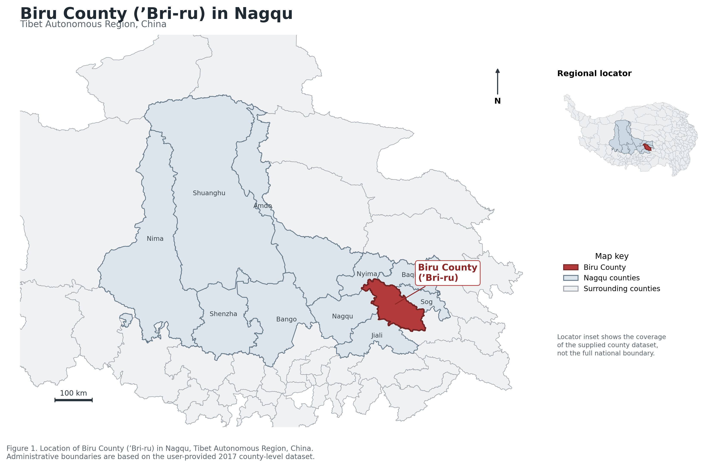

Deqiong
I am a linguist holding an M.A. in Tibetan Studies (Linguistics Specialization) from Minzu University of China (88.71/100; "Excellent" Thesis) and a B.A. in English from Beijing Language and Culture University, and a 2026 LSA Emmon Bach Fellow (CoLang 2026). My research focuses on the Biru ('Bri-ru) Khams Tibetan dialect in Nagqu—bridging Praat acoustic analysis and historical phonology with community-based multimodal documentation of folktales, folk songs, and traditional rituals.
Research & Fieldwork Showcase
1. Study Area: Biru ('Bri-ru), Nagqu
Located at the crossroads of Khams and Central Tibetan, Biru Tibetan exhibits internal sub-dialectal diversity (e.g., Nagshö and Jieshou) and contact-induced shifts under Central (Lhasa) Tibetan and Mandarin Chinese influence.

2. Phonetics & Historical Phonology
Master's thesis (A Phonetic Study of the Biru Dialect in Nagqu, Tibet, awarded "Excellent" Distinction) used Praat acoustic analysis and historical comparison to examine Old Tibetan bj- reflexes, consonant lenition, vowel splits, and contact-induced tonogenesis.

3. Multimodal Documentation & Community Workflow
Building a community-collaborative digital archive of Biru oral traditions—folktales, work and folk songs, ritual chants, and local ecological knowledge—annotated in ELAN and FLEx (Tibetan script, Wylie, IPA, Chinese/English) with tiered access ethics and a replicable toolkit for other Tibetan communities.

Publications & Conference Contributions
-
༄༅། །བོད་ལྗོངས་ནག་ཆུ་འབྲི་རུའི་ཡུལ་སྐད་ཀྱི་སྐད་གདངས་ལ་དཔྱད་པ།
An Analysis of Tone and Phonetics in the Biru Dialect of Nagqu, Tibet -
“Nagshö (Naxiu) Biru: Experiencing the Beauty of Northern Tibet through Traditional Clothing” (In Chinese)
Specialized Training, Fellowships & Skills
-
LSA Emmon Bach Fellowship — CoLang 2026 (University of Nevada, Reno, USA)
-
Workshop Scholarship — Summer Institute of Chinese Linguistics (SICL 2026), Phase II
-
Second Prize, Graduate Academic Scholarship — Minzu University of China (2020)
Contact
I welcome inquiries regarding Ph.D. research collaboration, Tibetan documentary linguistics, and community-based digital archiving.
Email: dhejoan889@gmail.com · Location: Lhasa, Tibet, China